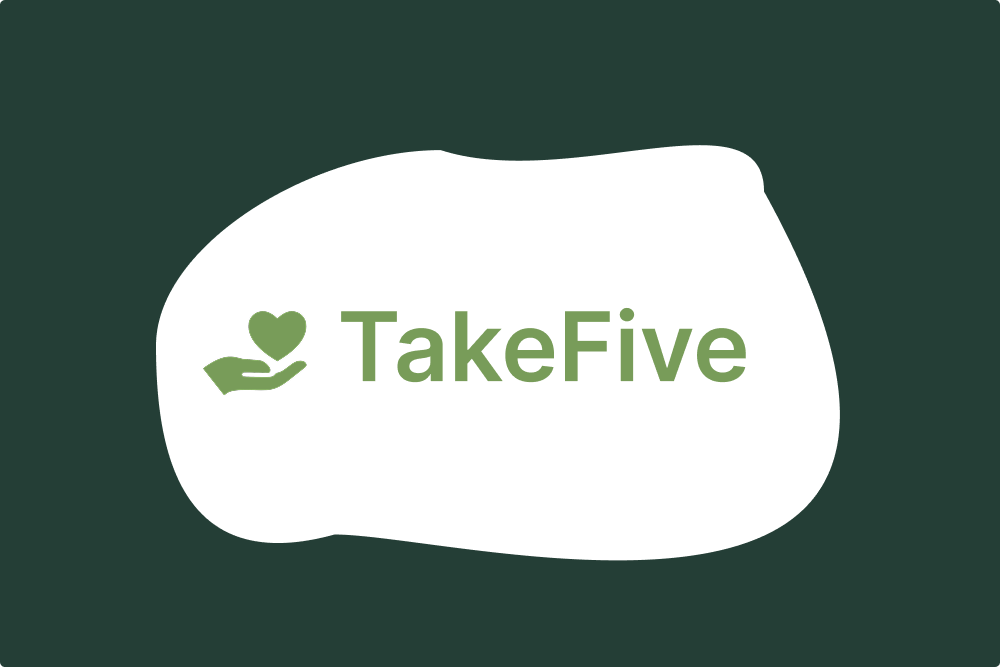
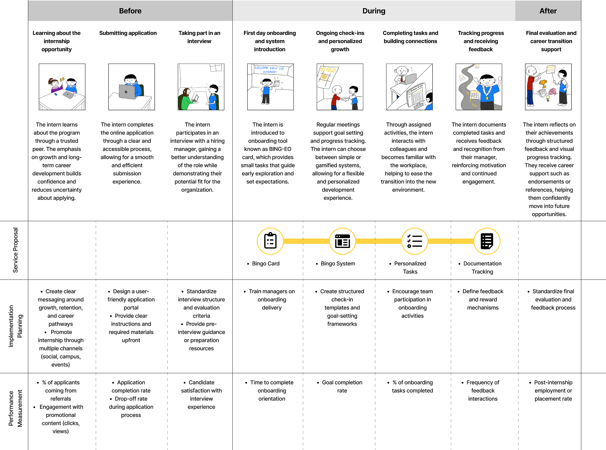

TakeFive: Designing Support for Informal Caregivers

Purpose:
How might we empower caregivers with the knowledge, resources, and support they need to feel less isolated and more equipped in their caregiving journey? This question guided our service design project during the Toronto chapter of the Global Service Jam. Working in a fast-paced and highly collaborative environment, our team explored the emotional, logistical, and mental challenges informal caregivers experience while navigating healthcare systems and supporting loved ones. Our goal was to design a human-centred service that provides caregivers with accessible support, meaningful respite, and a stronger sense of community.
Goals:
- Support informal caregivers experiencing burnout, stress, and emotional exhaustion
- Improve access to caregiving resources, services, and professional support
- Create a centralized and approachable platform for navigating caregiving responsibilities
- Foster connection and community among caregivers experiencing similar challenges
- Reduce the feeling of helplessness often associated with caregiving responsibilities
Approach:
Our team used rapid service design methods including collaborative ideation, user interviews, synthesis mapping, storyboarding, and iterative prototyping. Given the compressed timeline of the Global Service Jam, we were encouraged to prioritize speed, experimentation, and continuous feedback over perfection.
We began by reflecting on the Jam’s theme surrounding tensions between power and powerlessness. During this process, some team members shared personal experiences of suddenly becoming caregivers for loved ones. This grounded our research in lived experience and revealed how emotionally overwhelming caregiving can become, particularly for individuals navigating healthcare systems for the first time.
Through interviews and secondary research, we identified several recurring pain points, including caregiver burnout, difficulty accessing respite services, fragmented healthcare information, emotional isolation, and a lack of centralized support systems. We also recognized a growing societal need for caregiver support due to Canada’s aging population and the increasing reliance on family members as primary caregivers.
Service Blueprint

Interventions
Respite Support
A service pathway that helps caregivers access temporary relief through at-home care, adult day programs, and long-term care support. This feature was designed to reduce burnout and allow caregivers time to rest and recharge.
Mental Health Resources
A collection of mental health tools and emotional wellness resources tailored specifically to caregivers. This includes stress management support, coping strategies, and accessible mental health guidance.
Personalized Caregiving Guides
Condition-specific educational resources designed to help caregivers better understand and support their loved ones. These guides aim to reduce uncertainty and improve caregiver confidence.
Professional Support Access
A centralized system for connecting caregivers with professional services including transportation, healthcare assistance, and domestic support. This intervention helps reduce the logistical burden placed on caregivers.
Community Building
Online and in-person opportunities for caregivers to connect, share experiences, and support one another. This feature was designed to reduce feelings of isolation and foster a sense of belonging.
Challenges:
One of the primary challenges was designing for an emotionally sensitive and deeply personal problem space within a limited timeframe. Caregiving experiences vary significantly depending on individual circumstances, relationships, and healthcare needs, making it difficult to design a solution that felt broadly supportive while remaining personal and empathetic.
Another challenge involved balancing emotional support with practical functionality. Early concepts leaned heavily toward informational resources, but user feedback revealed that caregivers also needed emotional validation, community, and opportunities for respite. This pushed us to think beyond a traditional healthcare information platform and instead design a more holistic support ecosystem.
The rapid pace of the Global Service Jam also challenged us to make quick design decisions, prioritize core needs, and iterate continuously based on feedback rather than striving for polished perfection.
Outcomes:
Our final proposal resulted in TakeFive, a service platform designed to support caregivers through five interconnected pillars: respite, mental health, educational guidance, professional support, and community connection. The project was awarded the People’s Choice Award at the Toronto chapter of the Global Service Jam.
Beyond the final concept itself, the experience strengthened my ability to work within highly iterative and ambiguous design environments. It reinforced the importance of collaboration, rapid synthesis, and designing services that address both emotional and operational needs simultaneously.
The project also deepened my understanding of service design as a human-centred systems practice, particularly in healthcare-adjacent contexts where emotional experiences, institutional systems, and accessibility all intersect.
Reflections:
This project reinforced how meaningful both emotional and operational design decisions shape experiences. One of my biggest takeaways was learning how to design for motivation without relying on competition. Creating flexible pathways for engagement allowed us to prioritize inclusivity and individual growth while still maintaining structure and accountability.
I also gained a deeper appreciation for the role empathy and lived experience play in shaping meaningful design solutions. Some of the strongest insights emerged through personal storytelling and conversations with caregivers, which reminded me that impactful service design often begins with listening.
Finally, participating in the Global Service Jam challenged me to become more comfortable designing in fast-paced and ambiguous environments. Working under tight time constraints strengthened my confidence in collaborative ideation, rapid iteration, and making thoughtful design decisions without relying on perfectionism.